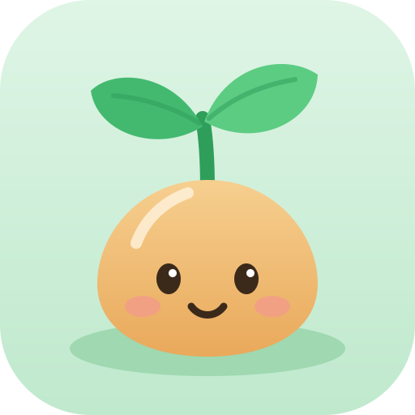

まだ おぼえて いない かんじから じゅんばんに でます。
しかくに はいる かんじを かこう
プリントや テストに つかう かんじを えらんでね。にがての かんじは さいしょから えらんで あります。
学習の記録は、この端末のブラウザの中だけに保存されています。別の端末に移すときや、念のための控えには、ファイルに書き出してください。
かんじのたね は、小学生が手書きで答える漢字テストです。まちがえた字は「にがてリスト」に入り、練習プリントを作って印刷できます。